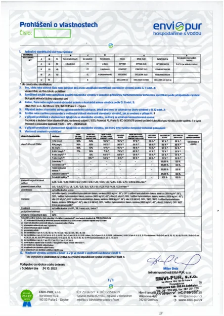

PDF
PDF Kezelési útmutató / 6,2 MB
Dokumentumok
Tekintse meg az útmutatókat, a műszaki információkat és a technológiai áttekintéseket. Minden dokumentumot azonnal megnyithat vagy letölthet.
5 eredeti PDF-dokumentumPDF Kezelési útmutató / 6,2 MB

PDFTeljesítménynyilatkozat / 517 kB
 PDF
PDF  PDF
PDF  PDF
PDF Technológiai áttekintés / 1,0 MB
Ilyen dokumentumot nem találtunk. Próbálkozzon más névvel vagy témakörrel.
Írja meg nekünk, milyen technológiával foglalkozik. Segítünk kiválasztani a következő lépést.